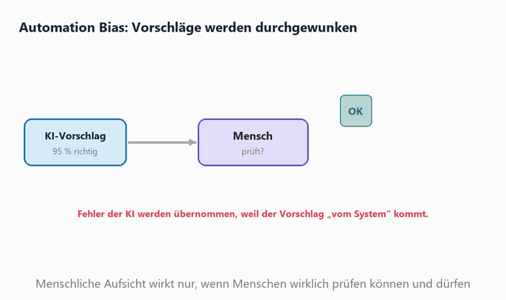

Zukunftskompetenzen: selbst organisiert, kritisch, kooperativ, verständlich
KI übernimmt Routinen – umso wichtiger werden Fähigkeiten, die Menschen auszeichnen: sich selbst organisieren und widerstandsfähig bleiben, kritisch denken (auch gegenüber KI-Ergebnissen), in interdisziplinären und internationalen Teams zusammenarbeiten, Probleme strukturiert lösen und klar kommunizieren. Dieses Modul bereitet Sie zugleich auf Präsentation und Fachgespräch in der Prüfung vor.
16 Lektionen in 3 Teilen6 Animationen1 Selbstcheck12 Übungen mit Antwortfeldern20 QuizfragenRechtsvorschrift § 9
Im Alltag – vertrautes Bild als Einstieg
Fachlich – genaue Erklärung
Prüfungstipp – so wird es abgefragt
Falle – hier verlieren viele Punkte
Lektion 1 · 20 Minuten
Warum Zukunftskompetenzen? Arbeit im Wandel durch KI
Im Alltag
Der Taschenrechner hat das Kopfrechnen nicht überflüssig gemacht – aber wichtiger wurde, ob man die richtige Rechnung aufstellt und ein falsches Ergebnis erkennt. Mit KI ist es ähnlich, nur in viel mehr Tätigkeiten.
Fachlich
§ 9 der Rechtsvorschrift nennt drei Bereiche: Selbstkompetenz (Selbstorganisation, Resilienz, kritisches Denken, Reflexion), Kooperation und Kommunikation (kollaboratives Arbeiten, interdisziplinäre Teams, Problemlösung, Kommunikation) und interkulturelle Zusammenarbeit mit Zeitmanagement und Interdisziplinarität.
Wenn KI Texte entwirft, Daten auswertet und Vorschläge macht, verschiebt sich die Arbeit hin zu: Fragen richtig stellen, Ergebnisse prüfen und verantworten, mit Menschen abstimmen, Unsicherheit aushalten, ständig dazulernen.
Merksatz
Je mehr KI kann, desto wichtiger werden Urteilskraft, Zusammenarbeit, Kommunikation und Lernfähigkeit.
Lektion 2 · 25 Minuten
Selbstorganisation: Ziele, Planung, Werkzeuge
Ziele: SMART formulieren, auf Wochen- und Tagesziele herunterbrechen.
Planen: Aufgaben sammeln (eine Liste statt vieler Zettel), priorisieren (Eisenhower), Zeit blocken, Puffer einplanen.
Werkzeuge: Aufgabenlisten, Kanban-Board (Modul 9), Kalender, Notizsystem; KI-Assistenten für Entwürfe, Zusammenfassungen und Erinnerungen – mit freigegebenen Werkzeugen.
Routinen: Wochenrückblick (Was habe ich geschafft? Was blockiert?), feste Zeiten für konzentrierte Arbeit, E-Mails gebündelt bearbeiten.
Merksatz
Selbstorganisation = klare Ziele, ein zentrales System für Aufgaben, Prioritäten, Zeitblöcke und regelmäßige Rückschau.
Lektion 3 · 30 Minuten
Resilienz: Faktoren und wie Führungskräfte sie fördern
Im Alltag
Ein Stehaufmännchen fällt um – und richtet sich wieder auf. Resilienz ist diese Fähigkeit, Belastungen zu bewältigen und gestärkt daraus hervorzugehen.
Fachlich
Häufig genannte Resilienzfaktoren: Optimismus, Akzeptanz, Lösungsorientierung, Selbstwirksamkeit (Vertrauen in die eigene Wirksamkeit), Verantwortung übernehmen, Netzwerk und Beziehungen, Zukunftsplanung.
Führungskräfte fördern Resilienz, indem sie Ressourcen sichern (realistische Ziele, Zeit, Unterstützung), Handlungsspielraum geben, Fehler als Lernchance behandeln, psychologische Sicherheit schaffen, Belastungen früh ansprechen und selbst Vorbild sind (Pausen, Erreichbarkeit). Organisationale Resilienz kommt dazu: Notfallpläne, Redundanzen, Wissensverteilung.
nur Informationen suchen, die die eigene Meinung stützen
nur Erfolgsberichte über das Lieblingstool lesen
Ankereffekt
eine erste Zahl prägt die Schätzung
Anbieter nennt „Einsparung bis 70 %“ – Planung startet dort
Verfügbarkeitsheuristik
was leicht einfällt, wirkt häufiger
ein spektakulärer KI-Fehler in den Medien prägt die Risikoeinschätzung
Überlebenden-Fehler
nur Erfolge betrachten, Misserfolge fehlen
„Alle bekannten KI-Projekte haben sich gelohnt“
Korrelation ≠ Kausalität
Zusammenhang wird als Ursache gedeutet
Filialen mit KI-Kasse haben mehr Umsatz – liegen aber auch in größeren Städten
Behauptungen prüfen: Wer sagt das, mit welchem Interesse? Welche Daten stützen es, wie groß ist die Stichprobe, gibt es eine Vergleichsgruppe? Was spricht dagegen? Was müsste wahr sein, damit es stimmt?
Merksatz
Kritisch denken heißt: Quellen, Daten und Gegenargumente prüfen – und die eigenen Denkfehler kennen.
Lektion 5 · 30 Minuten
Kritisches Denken mit KI: Quellen, Halluzinationen, Automation Bias

Menschliche Aufsicht braucht echte Prüfung.
Halluzinationen: Sprachmodelle erzeugen plausibel klingende, aber falsche Aussagen, Zitate und Quellen. Wichtiges gegen Primärquellen prüfen.
Quellen: Systeme mit Quellenangaben (RAG) erleichtern die Prüfung – die Quelle selbst trotzdem öffnen.
Automation Bias: Menschen vertrauen maschinellen Vorschlägen zu sehr. Gegenmittel: Begründungspflicht, Unsicherheit und Erklärungen anzeigen, Stichproben, Schulung, Abweichungen ausdrücklich erlauben.
Gegen-Prompting: die KI nach Gegenargumenten, Schwachstellen und Annahmen fragen.
Merksatz
KI-Ergebnisse sind Entwürfe: prüfen, Quellen öffnen, Gegenargumente suchen – die Verantwortung bleibt beim Menschen.
Prüfungstipp
„Warum ist Automation Bias gefährlich, und was tun Sie dagegen?“ – Menschen übernehmen Vorschläge ungeprüft, Fehler bleiben unentdeckt; Gegenmaßnahmen nennen (mindestens drei).
Reflexionsfragen: Was lief gut, was nicht, und warum? Was war mein Anteil? Was mache ich nächstes Mal anders? Werkzeuge: Lerntagebuch, kollegiale Beratung, 360-Grad-Feedback, Retrospektiven.
Merksatz
Selbstreflexion braucht den Blick von außen (Feedback) und den Mut, Verborgenes zu teilen.
Lektion 7 · 25 Minuten
Kollaboratives Arbeiten: Werkzeuge, Regeln, remote und hybrid
Bereich
Gute Praxis
Werkzeuge
gemeinsame Dokumente, Chat, Videokonferenz, Kanban-Board, Wiki – mit klarer Zuordnung, was wohin gehört
Kommunikationsregeln
Reaktionszeiten, Kanäle nach Dringlichkeit, asynchron vor synchron, Entscheidungen schriftlich festhalten
Besprechungen
Ziel und Agenda vorab, Moderation, Zeitbox, Ergebnisse und Aufgaben mit Verantwortlichen
Remote und hybrid
gleiche Chancen für Anwesende und Zugeschaltete, Kamera-Absprachen, regelmäßige Treffen vor Ort, informeller Austausch
KI im Team
Protokolle und Zusammenfassungen, Übersetzung – nach Zustimmung und mit freigegebenen Werkzeugen
Merksatz
Gute Zusammenarbeit braucht wenige, klar geregelte Werkzeuge und Absprachen – besonders, wenn das Team verteilt arbeitet.
Lektion 8 · 30 Minuten
Teams entwickeln: Phasen nach Tuckman, Teamrollen nach Belbin
Teams durchlaufen Phasen.
Orientierung
Teamrollen nach Belbin
handlungsorientiert
Macher (treibt an), Umsetzer (setzt Pläne um), Perfektionist (achtet auf Details und Termine)
Verschiedene Sichtweisen (Technik, Fachbereich, Recht, Betrieb) führen zu besseren, umsetzbaren Lösungen; Fehler werden früher erkannt; Akzeptanz steigt.
Reibungen
Unterschiedliche Fachsprachen („Präzision“ heißt im Fachbereich etwas anderes als in der Statistik), Ziele und Arbeitskulturen, Statusunterschiede, „Übersetzungsverluste“.
Förderung: gemeinsames Ziel und Nutzen sichtbar machen, Glossar mit Begriffen, „Übersetzer“-Rollen (z. B. Product Owner, Business Analyst), gemeinsame Workshops und Demos, Wertschätzung aller Beiträge, psychologische Sicherheit.
Merksatz
Interdisziplinarität ist ein Vorteil, wenn man Sprache, Ziele und Arbeitsweisen bewusst verbindet.
fünfmal „Warum?“ fragen, bis die Grundursache erreicht ist
Ishikawa
Ursachen nach 6 M sammeln, dann die wichtigsten prüfen
Design Thinking
nutzerzentriert vom Problem zur getesteten Lösung (Modul 10)
A3-Report
auf einer Seite: Hintergrund, Ist-Zustand, Ziel, Ursachenanalyse, Maßnahmen, Plan, Nachverfolgung
5-Why-Beispiel: Die Prognose war falsch. – Warum? Die Daten der letzten Woche fehlten. – Warum? Der Import schlug fehl. – Warum? Das Dateiformat des Lieferanten änderte sich. – Warum? Es gibt keine Vereinbarung zum Format. – Warum? Datenlieferungen sind vertraglich nicht geregelt. → Maßnahme: Datenvertrag mit Formatvorgaben und automatische Prüfung beim Import.
Merksatz
Erst Ursachen verstehen, dann lösen: 5-Why für die Tiefe, Ishikawa für die Breite, A3 für die Darstellung.
Lektion 11 · 30 Minuten
Kommunikationsmodelle: Schulz von Thun, Watzlawick, Sender-Empfänger
Vier Seiten einer Nachricht.
Sender-Empfänger-Modell (Shannon/Weaver): Nachricht wird codiert, übertragen und decodiert; Störungen verfälschen sie.
Schulz von Thun: Jede Nachricht hat Sachinhalt, Selbstkundgabe, Beziehung und Appell; der Empfänger hört mit „vier Ohren“.
Watzlawick: „Man kann nicht nicht kommunizieren.“ Jede Kommunikation hat einen Inhalts- und einen Beziehungsaspekt, der Beziehungsaspekt bestimmt, wie der Inhalt verstanden wird.
Merksatz
Missverständnisse entstehen oft auf der Beziehungsebene – nachfragen, welche Seite gemeint war.
Prüfungstipp
Vier-Seiten-Analyse in der Prüfung: zu jeder Seite einen Satz formulieren, wie in der Animation.
Aufmerksamkeit zeigen, paraphrasieren („Sie meinen also …“), nachfragen, Gefühle spiegeln, nicht sofort bewerten
Ich-Botschaften
„Ich habe den Eindruck …“ statt „Du machst immer …“
Offene Fragen
W-Fragen statt Ja/Nein-Fragen
Gewaltfreie Kommunikation
Beobachtung ohne Bewertung, Gefühl, Bedürfnis, konkrete Bitte
Merksatz
Zuhören, nachfragen, aus der eigenen Sicht sprechen und konkret bitten – so bleiben Gespräche sachlich.
Lektion 13 · 35 Minuten
Präsentieren und überzeugen – auch vor dem Prüfungsausschuss
Zielgruppe: Was wissen die Zuhörenden, was wollen sie entscheiden? Der Prüfungsausschuss will Ihre Handlungskompetenz sehen: Problem verstehen, Lösung begründen, Wirkung belegen, reflektieren.
Aufbau: Einstieg mit Problem und Ziel, Kernaussage früh, Vorgehen, Ergebnis mit Zahlen, Wirtschaftlichkeit und Risiken, Fazit und Ausblick, Reflexion.
Folien: eine Aussage je Folie, Überschrift als Satz, wenig Text, aussagekräftige Grafiken, lesbare Schrift.
Auftreten: frei sprechen, Blickkontakt, Pausen, Zeit einhalten (Bachelor: Präsentation mindestens 20 Minuten; Präsentation und Fachgespräch zusammen höchstens 60 Minuten).
Fachgespräch: Rückfragen als Chance sehen, kurz und strukturiert antworten, Grenzen ehrlich benennen, Bezüge zu anderen Handlungsbereichen (Recht, Wirtschaftlichkeit, Personal) herstellen.
Proben Sie die Präsentation mit Stoppuhr und lassen Sie sich von Kolleginnen „Prüfungsfragen“ stellen. Der Transfer-Simulator in Modul 19 hilft dabei.
Lektion 14 · 30 Minuten
Interkulturelle Zusammenarbeit: Kulturdimensionen nach Hofstede
Dimension
Frage
Wirkung im Team
Machtdistanz
Wie stark werden Hierarchieunterschiede akzeptiert?
Wer entscheidet? Wird Kritik an Vorgesetzten offen geäußert?
Individualismus / Kollektivismus
Ich oder Wir?
Einzelleistung vs. Gruppenloyalität, Feedback öffentlich oder vertraulich
Maskulinität / Femininität
Wettbewerb und Leistung oder Fürsorge und Lebensqualität?
Umgang mit Erfolg, Konflikt, Arbeitszeit
Unsicherheitsvermeidung
Wie stark werden Regeln und Planbarkeit gewünscht?
detaillierte Pläne vs. Improvisation
Langzeitorientierung
kurzfristige Ergebnisse oder langfristige Ziele?
Geduld bei Investitionen, Traditionen
Nachgiebigkeit / Beherrschung
Wie frei werden Bedürfnisse ausgelebt?
Umgang mit Freizeit und Spaß bei der Arbeit
Kulturdimensionen beschreiben Durchschnittswerte von Ländern, nicht einzelne Menschen – sie helfen, Unterschiede zu verstehen, ohne Klischees zu bedienen. Praxis: Erwartungen offen klären (Entscheidungswege, Feedback, Termine), schriftlich zusammenfassen, Zeitzonen fair verteilen, Sprache einfach halten.
Merksatz
Hofstede erklärt typische Unterschiede – im Team zählt, Erwartungen offen auszusprechen und gemeinsame Regeln zu vereinbaren.
feste Zeit für eine Aufgabe, danach Ergebnis bewerten
Perfektionismus begrenzen
Getting Things Done
alles erfassen, klären, organisieren, überprüfen, erledigen
viele parallele Themen
Merksatz
Keine Methode passt für alles – kombinieren: priorisieren (Eisenhower), planen (ALPEN), fokussiert arbeiten (Pomodoro, Timeboxing).
Lektion 16 · 25 Minuten
Agiles Arbeiten im Alltag: Retrospektive, Timeboxing, Visualisierung
Retrospektive: regelmäßig fragen „Was lief gut? Was nicht? Was probieren wir als Nächstes?“ – auch außerhalb von Scrum, etwa nach jedem Monat oder Meilenstein.
Timeboxing: Besprechungen und Aufgaben zeitlich begrenzen; am Ende entscheiden: fertig, verlängern oder anders angehen.
Visualisierung: Aufgaben, Ziele und Hindernisse sichtbar machen (Kanban-Board, Kennzahlen am Teamboard).
Kleine Schritte: früh Zwischenergebnisse zeigen, Feedback holen, anpassen.
Merksatz
Agil arbeiten heißt im Alltag: sichtbar machen, Zeit begrenzen, regelmäßig zurückblicken und in kleinen Schritten verbessern.
Übungen · 110 Minuten
Übungen mit Musterlösung
Tragen Sie Ihre Antworten in die Felder ein.
Aufgabe 1: Denkfehler
4 Punkte
1. Die Projektleiterin liest nur Berichte, die ihr Lieblingstool loben. 2. Der Anbieter nennt „bis zu 70 % Einsparung“, die Planung startet bei 60 %. 3. Man untersucht nur erfolgreiche KI-Projekte, um Erfolgsfaktoren abzuleiten. 4. Ein Sachbearbeiter übernimmt alle KI-Vorschläge ungeprüft.
Ein Teammitglied sagt im Meeting: „Das Modell ist schon wieder falsch.“ Analysieren Sie die Aussage mit dem Vier-Seiten-Modell.
Lösung anzeigen
Sachinhalt: Das Ergebnis ist fehlerhaft, und das nicht zum ersten Mal · Selbstkundgabe: Ich bin frustriert oder besorgt · Beziehung: Ihr arbeitet nicht sorgfältig (möglicher Vorwurf) · Appell: Ändert das, prüft gründlicher. Je 1 Punkt.
Aufgabe 3: Teamphasen
4 Punkte
1. Das Team streitet über Zuständigkeiten. 2. Alle sind höflich und warten ab. 3. Das Team vereinbart Regeln für Code-Reviews. 4. Das Team arbeitet selbstständig mit hoher Leistung.
1. Bringt immer neue, ungewöhnliche Ideen ein. 2. Prüft Vorschläge nüchtern und kritisch. 3. Treibt das Team an, auch unter Druck. 4. Achtet auf Details, Fehler und Termine.
Der KI-Chatbot gibt seit einer Woche falsche Lieferzeiten an. Führen Sie eine plausible 5-Why-Analyse durch und leiten Sie eine Maßnahme ab.
Lösung anzeigen
Beispiel: falsche Lieferzeiten – Warum? Der Bot nutzt veraltete Daten. – Warum? Die Schnittstelle zum Lager liefert seit dem Update nichts. – Warum? Das Lagersystem hat das Feldformat geändert. – Warum? Änderungen werden dem KI-Team nicht gemeldet. – Warum? Es gibt keinen Änderungsprozess für Schnittstellen. → Maßnahme: Änderungsmanagement und automatische Datenprüfung mit Alarm (2 P. Kette, 1 P. Maßnahme).
Aufgabe 6: Ishikawa
4 Punkte
Ordnen Sie die Ursachen den 6 M zu: 1. Veraltete Trainingsdaten. 2. Beschäftigte sind nicht geschult. 3. Zu schwache Hardware. 4. Plötzliche Marktveränderung.
Lösung anzeigen
1. Material (Daten) · 2. Mensch · 3. Maschine · 4. Mitwelt. Je 1 Punkt.
Aufgabe 7: Gewaltfreie Kommunikation
4 Punkte
Ein Kollege liefert zum dritten Mal Daten ohne Beschreibung der Spalten. Formulieren Sie eine Nachricht nach den vier Schritten der gewaltfreien Kommunikation.
Lösung anzeigen
Beispiel: „Die letzten drei Datenlieferungen kamen ohne Beschreibung der Spalten (Beobachtung). Ich bin dann unsicher und verliere viel Zeit (Gefühl), weil ich verstehen muss, was die Werte bedeuten, bevor ich das Modell trainiere (Bedürfnis). Kannst du künftig jeder Lieferung eine kurze Spaltenbeschreibung beilegen – ich schicke dir gern eine Vorlage? (Bitte)“ Je Schritt 1 Punkt.
Aufgabe 8: Kulturdimensionen
3 Punkte
Welche Dimension nach Hofstede erklärt am ehesten: 1. Ein Teil des Teams erwartet, dass die Vorgesetzte entscheidet. 2. Ein Teil wünscht sehr detaillierte Pläne und Regeln. 3. Ein Teil betont Gruppenloyalität, der andere persönliche Leistung.
Warum ist Automation Bias in KI-gestützten Prozessen gefährlich, und was tun Sie dagegen? Nennen Sie mindestens zwei Maßnahmen.
Lösung anzeigen
Menschen übernehmen Vorschläge ungeprüft, Fehler der KI bleiben unentdeckt; die menschliche Aufsicht wird zur Formalität (1 P.). Maßnahmen: Begründungspflicht bei Übernahme, Erklärungen und Unsicherheit anzeigen, Stichprobenkontrollen, Schulung, Abweichungen ausdrücklich erlauben, Arbeitsbelastung so gestalten, dass Prüfen möglich ist (2 P.).
Aufgabe 10: Johari-Fenster
3 Punkte
1. Kollegen wissen, dass ich in Besprechungen oft unterbreche – ich nicht. 2. Ich weiß, dass ich vor Präsentationen sehr nervös bin – andere nicht. 3. Alle wissen, dass ich Data Scientist bin.
Welche Methode? 1. Aufgaben nach wichtig und dringend sortieren. 2. 25 Minuten konzentriert arbeiten, dann 5 Minuten Pause. 3. Tagesplan mit geschätzter Dauer und etwa 40 % Puffer.
Sie leiten ein neues KI-Projektteam: Data Scientists in Indien, Entwickler in den Niederlanden, Fachexperten in Deutschland. Nach vier Wochen gibt es Spannungen: Die einen warten auf Ihre Entscheidungen, die anderen entscheiden eigenständig; Fachbegriffe werden unterschiedlich verstanden; zwei Personen wirken überlastet. Beschreiben Sie Ihr Vorgehen.
Lösung anzeigen
Einordnung (2 P.): Team in der Storming-Phase (Tuckman); unterschiedliche Erwartungen an Entscheidungen erklärbar durch Machtdistanz (Hofstede); Missverständnisse durch Fachsprachen (Interdisziplinarität). Zusammenarbeit (2 P.): Team-Vereinbarung mit Entscheidungsrahmen (wer entscheidet was), Kommunikationsregeln, faire Besprechungszeiten über Zeitzonen, Glossar, Entscheidungen schriftlich festhalten. Kommunikation (2 P.): Einzelgespräche mit aktivem Zuhören, Feedback in Ich-Botschaften, Retrospektive zur Klärung, Konflikte nach Harvard-Konzept. Belastung und Resilienz (2 P.): Aufgaben neu verteilen, Prioritäten mit Eisenhower klären, Puffer, Ressourcen sichern, psychologische Sicherheit, Vorbild bei Erreichbarkeit.
Abschlussquiz · 25 Minuten
Abschlussquiz Modul 17
20 Fragen im Stil der schriftlichen Prüfung, jeweils eine richtige Antwort. Ab 14 richtigen Antworten (70 %) sind Sie gut vorbereitet.
0 / 20
Zusammenfassung
Das Wichtigste auf einen Blick
Selbstorganisation
Ziele, ein System, Prioritäten, Zeitblöcke, Rückschau.
Resilienz
sieben Faktoren; Führung sichert Ressourcen und Sicherheit.